|
Vitesse - Roda JC (0-0) 17 februari 2007
( |
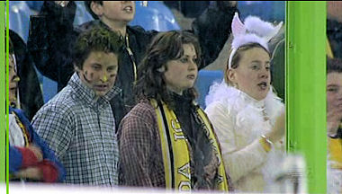
Nog even naar Arnhem voordat het carnaval echt losbarst.
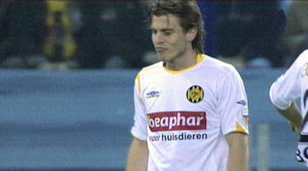
In de 3e min. gaat Meeuwis al op de bon.
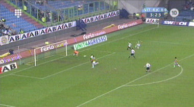
Vitesse heeft een overwicht met hier een van de vele kansen voor
Lazovic.
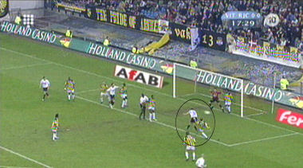
Na een klein kwartier een uitstekende kans voor De Fauw die de
bal ruim naast kopt.
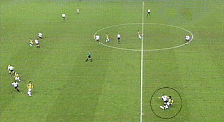
De ijverig fluitende Luinge ontgaat ook deze overtreding van
Van Tornhout op Fränkel niet.
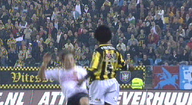
Fränkel deelt een tik uit aan Van Tornhout die theatraal onderuit
gaat. Beide spelers krijgen geel.
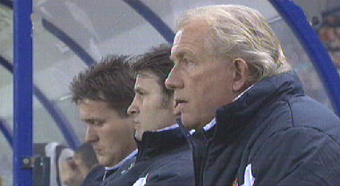
Eerste wedstrijd voor Koopman.
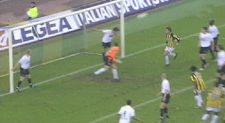
Redding op de lijn door Marcel Meeuwis.
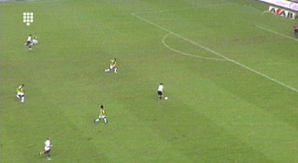
De tweede en laatste grote kans voor Roda in de eerste helft. De
niet-fitte Oper (met pijnstillers) schiet vrij voor de keeper erg ver
naast het doel.
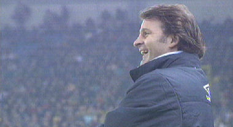
Dit was de wedstrijd van de lach. Iedereen aan de XTC? Het spel
was namelijk bedroevend.
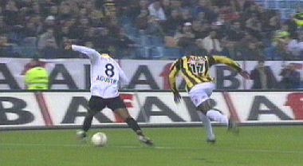
Prima voorbereidend werk van Agustien wiens actie niet afgerond
wordt dankzij goed werk van doelman Velthuizen die in botsing
komt met een ploeggenoot.
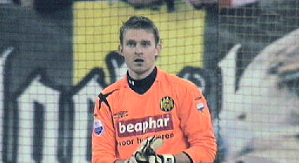
Na ruim een uur spelen behoedt Castro met een fraaie redding
Roda voor een achterstand door een schot van dichtbij, (Junker), te
keren.
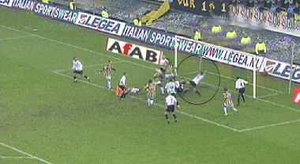
Andermaal een redding op de doellijn van Meeuwis.
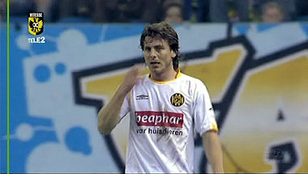
Toch teleurgesteld na de 0-0.
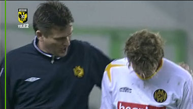
Hesp troost de eveneens teleurgestelde Van Tornhout.
Roda zakt van de zevende naar de achtste plaats.
©
Koempels Pleasure Dome
|